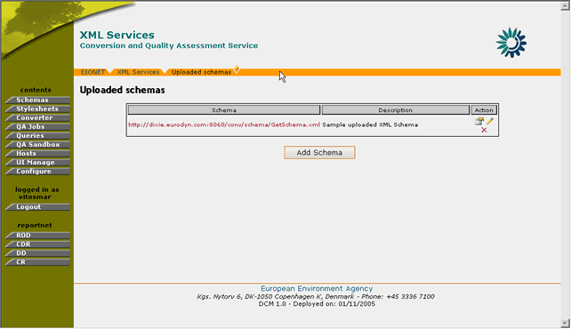
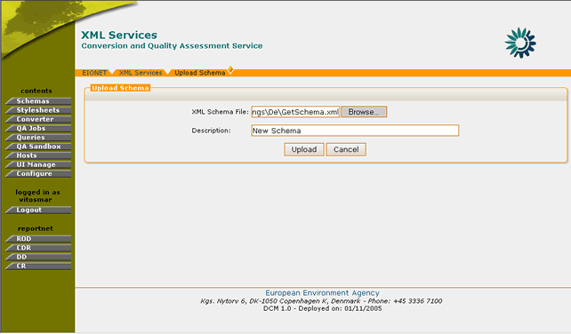
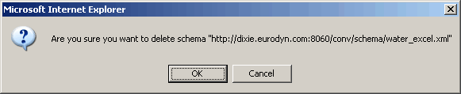
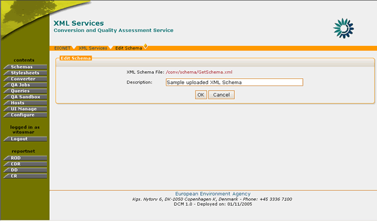
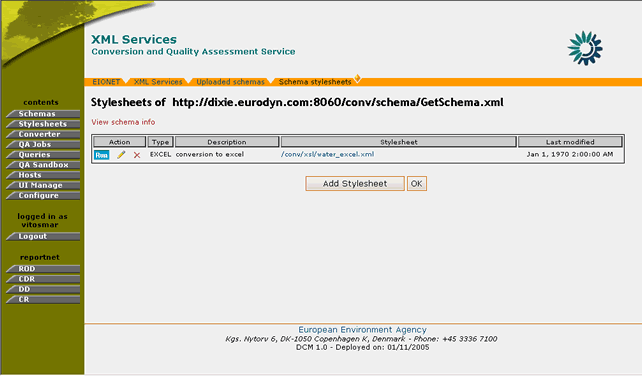

A DCM Administrator is a privileged user who is responsible for managing the DCM. The system features, which will perform administrative operations are only be authorized to this User class. The responsibilities of the administrator are:
The Administrator of DCM may upload a new XML Schema, which can be associated with conversion stylesheets.
In order to create such an XML Schema the user must be logged in as DCM Administrator.
If you have administrator privileges, then the following steps must be followed:
STEP 1 – Login
If you are not already logged in, see: Authenticate User Account.
STEP 2 – Click on “Schemas” button on the navigation bar.
Arrive at the Schemas section. The user may view the list of existing uploaded schemas.

Figure 3: Uploaded XML Schemas
STEP 3 – Click on “Add Schema” button
Clicking on the “Add Schema” button will take the user on the create schema menu.
STEP 4 – Fill-in required values.
In order for the XML Schema to be successfully created, all fields must be properly filled-in. Namely, the DCM Administrator must browse to the file of the XML Schema to be uploaded and then specify a description for it.

Figure 4: XML Schema addition
STEP 5 – Finalize upload.
After filling-in all required values the administrator must press the “Upload” button in order for the new XML Schema to be successfully created.
So, in summary:
Step |
Add new XML Schema |
1 |
Login |
2 |
Click on “Schemas” icon |
3 |
Click on “Add new Schema” button |
4 |
Fill-in required values |
5 |
Finalize upload |
In order to delete an XML Schema the user must be logged in as DCM Administrator.
If the user has administrator privileges, then the following steps must be followed:
STEP 1 – Login
If you are not already logged in, see: Authenticate User Account.
STEP 2 – Click on “Schemas” button on the navigation bar.
Arriving at the Schemas section, the user may view the list of existing Schemas (Figure 3: ).
STEP 3 – Click the (Delete Schema) icon.
You may select which Schema to delete by clicking the delete schema icon. This icon is located at the rightmost column of the channel list
STEP 4 – Confirm Schema’s Deletion
For safety reasons, the user receives a confirmation prompt for the delete schema action. If the user confirms, then the schema is deleted from the DCM database. In case of confirmation, all related stylesheets are removed along with the XML schema.

Figure 5: Delete Schema confirmation prompt
So, in summary:
Step |
Delete an XML Schema |
1 |
Login |
2 |
Click on “Schemas” icon |
3 |
Click on “Delete Schema” button |
4 |
Confirm XML Schema deletion |
In order to edit a Schema you must be logged in as DCM Administrator.
If the user has administrator privileges, then the following steps must be followed:
STEP 1 – Login
If you are not already logged in, see: Authenticate User Account.
STEP 2 – Click on “Schemas” button on the navigation bar.
Arriving at the Schemas section, the user may view the list of uploaded schemas (Figure 3: Uploaded XML Schemas).
STEP 3 – Click on the edit schema icon for an entry on the list
By clicking on the edit schema icon “” the user arrives at the edit schema dialogue.

Figure 6: Edit Schema page
STEP 4 – Edit Schema
The Administrator is able to change the description for an uploaded XML schema. The XML schema file itself is not editable.
STEP 5 – Update Schema
By pressing the “OK” button, the user accepts the changes on the Description field. The cancel button will call off any changes in case the user decides not to perform the edit operation.
So, in summary:
Step |
Edit Schema |
1 |
Login |
2 |
Click on “Schemas” button |
3 |
Click on the edit schema icon for an entry on the list |
4 |
Edit Schema |
5 |
Update Schema |
In addition to the “Edit Schema” functionality described in section 3.2.3, DCM also offers the possibility to the user to view and edit the XML Schema’s root elements. The definition of root elements by the DCM administrator allows the system to find the appropriate conversions for delivered XML files that do not contain XML schemas.
For example, consider a file Handcoded conversion for an XML Schema for which the following root element has been added:
GeneralCharacterisation: http://dd.eionet.europa.eu/namespace.jsp?ns_id=8
With this information stored in the DCM database, if a user attempts to convert an XML document which is structured according to the above-mentioned Handcoded conversion but with no “xsi:noNamespaceSchemaLocation” information, the system will be able to determine the appropriate XML schema, by identifying the XML namespaces that exist in the submitted document and matching it against the corresponding values in the DCM.
Important Note: This functionality is available only for XML Schemas with handcoded conversions.
In order to perform such an operation, you must be logged in as DCM Administrator.
If the user has administrator privileges, then the following steps must be followed:
STEP 1 – Login
If you are not already logged in, see: Authenticate User Account.
STEP 2 – Browse to “View Schema info” section.
This section is accessible by the user from the following navigation paths:
DCM >> Schemas >> View Stylesheets
or
DCM >> Stylesheets >> View Stylesheets
STEP 3 – Edit Schema or DTD information
By arriving on the “schema information” page, the user has the ability to edit the following elements:
The administrator may add or remove root elements of the schema affecting in this manner the way the XML Schema is processed.
In order to add such elements, the user must insert the following values:
After the insertion of the required information the administrator must press the “save” button in order for changes to take effect. The new root element is then visible in the list of created root elements.
Similarly, the DCM administrator may remove such elements by clicking the “delete” icon on the corresponding root elements.
Figure 7: Edit Schema or DTD elements
STEP 4 – Update Schema
By pressing the “OK” button, the user accepts the changes on the Description field. The cancel button will call off any changes in case the user decides not to perform the edit operation.
So, in summary:
Step |
Edit Schema |
1 |
Login |
2 |
Browse to “View Schema info” section |
3 |
Click on the edit schema or DTD information |
4 |
Update Schema |
The stylesheets are XSL files, which are used to perform the conversions. This XSL stylesheet stores the information on how the converted documents should be structured and should correspond also to the structure of the XML Schema they are assigned to.
DCM supports the following types of stylesheet creation:
Generation of stylesheets from the Data Dictionary
The automatic generation of stylesheets takes place with the DCM fetching from the DD the following data regarding table definition:
After processing this data, the DCM generates for all tables fetched from the data Dictionary the following types of stylesheets:
The stylesheets that have been generated according to this procedure are then displayed in the “Stylesheets” section of the DCM. The information of these stylesheets is not editable by the DCM users or administrators. However, these stylesheets are available to DCM users for downloading or performing conversions either directly through DCM of via external systems.
Upload of Handcoded conversions
As the name denotes, the Handcoded conversions are stylesheets which are not automatically generated by DCM, but are explicitly uploaded on it. For the creation and management of these Handcoded conversions please see sections 3.3.2-4
In order to add an XSL stylesheet to an uploaded XML Schema you must be logged in as DCM Administrator. If the user has administrator privileges, then the following steps must be followed:
STEP 1 – Login
If you are not already logged in, see: Authenticate User Account.
STEP 2 – Click on “Schemas” button on the navigation bar.
Arriving at the Schemas section, the user may view the list of uploaded schemas (Figure 3: Uploaded XML Schemas).

Figure 8: View Stylesheets page
STEP 3 – Click on the view stylesheets icon for an entry on the list
By clicking on the view stylesheets icon “” the user may consult the stylesheets that have been defined for this XML Schema.
STEP 4 – Select “Add Stylesheet”
The DCM Administrator must press the “Add Stylesheet” button. This will take the user to the add stylesheet dialogue where all the required information must be filled-in.
STEP 5 – Fill-in Stylesheet information
The fields that need to be filled-in for a stylesheet upload are:
- XML Schema URL. This is set automatically to the URL of the schema under question. While creating the stylesheet, the user is able to select other schemas from the DD.
- Output type. The user can specify the type of file, which will be the result of the conversion. The possible values are: Excel, PDF, HTML, XML, SQL
- Description. This is a text field where the user may insert a short description about the purpose of the stylesheet
- XSL File. The user can browse and select the stylesheet file, which will be uploaded.
STEP 6 – Upload Schema
Pressing the “Upload” button upload the stylesheet on DCM. The stylesheet will be associated to the XML Schema selected.

Figure 9: Add new Stylesheet
So, in summary:
Step |
Add Stylesheets to XML Schema |
1 |
Login |
2 |
Click on “Schemas” button |
3 |
Click on the view stylesheets icon for an entry on the list |
4 |
Select “Add Stylesheet” |
5 |
Fill-in Stylesheet information |
6 |
Upload Stylesheet |
In order to remove an XSL stylesheet from a schema you must be logged in as DCM Administrator. If the user has administrator privileges, then the following steps must be followed:
STEP 1 – Login
If you are not already logged in, see: Authenticate User Account.
STEP 2 – Click on “Schemas” button on the navigation bar.
Arriving at the Schemas section, the user may view the list of uploaded schemas (Figure 3).
STEP 3 – Click on the view stylesheets icon for an entry on the list
By clicking on the view stylesheets icon the user may consult the stylesheets that have been defined for this XML Schema.
STEP 4 – Delete Stylesheet
The DCM Administrator can delete a stylesheet by clicking on the “delete stylesheet” icon
for the desired stylesheet entry. The system will ask for user confirmation before proceeding with the deletion.
STEP 5 – Confirm deletion
After confirmation the all the stylesheet’s information are removed from the DCM database
So, in summary:
Step |
Remove Stylesheet from XML Schema |
1 |
Login |
2 |
Click on “Schemas” button |
3 |
Click on the view stylesheets icon for an entry on the list |
4 |
Delete Stylesheet |
5 |
Confirm deletion |
In order to edit an XSL stylesheet from a schema you must be logged in as DCM Administrator. If the user has administrator privileges, then the following steps must be followed:
STEP 1 – Login
If you are not already logged in, see: Authenticate User Account.
STEP 2 – Click on “Stylesheets” button on the navigation bar.
Arriving at the Stylesheets section, the user may view the list of both hand-coded schemas and schemas imported from the Data Dictionary along with their stylesheets.
STEP 3 – Click on the view stylesheets icon for an entry on the list
By clicking on the view stylesheets icon “” the user may consult the stylesheets that have been defined for this XML Schema.
STEP 4 – Edit Stylesheet
The DCM Administrator can edit a stylesheet by clicking on the “edit stylesheet” icon for the desired stylesheet entry. This will take the user to the “edit stylesheet” page where the following fields are editable: URL of XML schema, output type, description, XSL file.
Important Note: If a new XSL file is selected, the previously uploaded stylesheet will be replaced.

Figure 10: XSL Stylesheet edit
STEP 5 – Update values
The user must press the “Upload” button in order for the changes made to take effect.
So, in summary:
Step |
Edit Stylesheet |
1 |
Login |
2 |
Click on “Stylesheets” button |
3 |
Click on the view stylesheets icon for an entry on the list |
4 |
Edit Stylesheet |
5 |
Update Values |